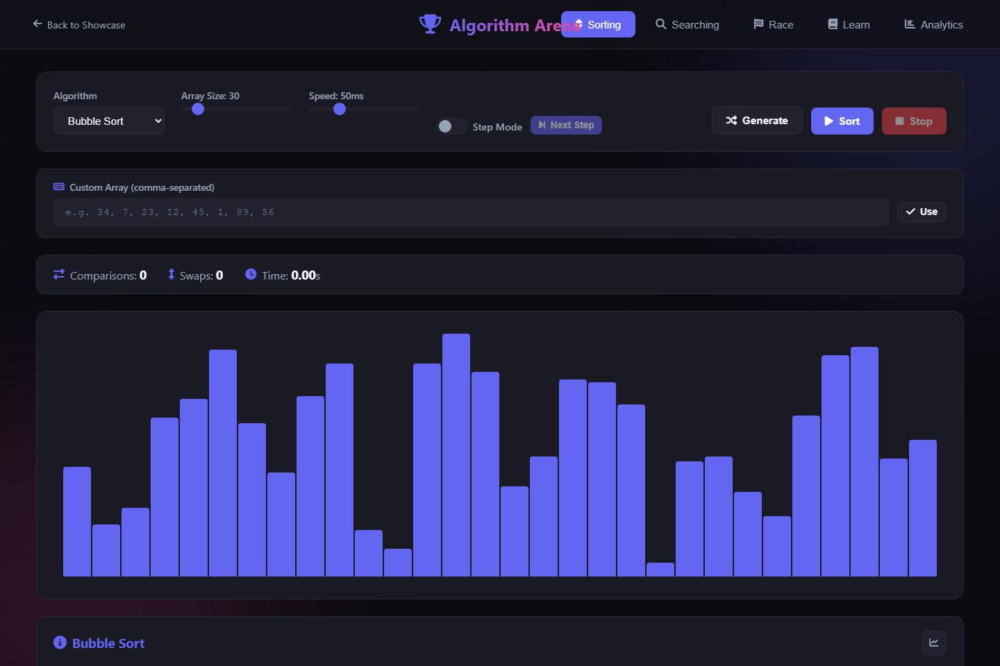

Make algorithm behavior visible.
Animated sorting, searching, and side-by-side races turn abstract operations into something visitors can inspect.
Personal project / Learning tool

The problem
A final sorted array hides the work an algorithm performed. Algorithm Arena exposes intermediate steps, comparisons, and swaps so people can explore how different approaches reach an answer.
How it works
Asynchronous sorting functions update the visualization between operations. Controls adjust data size and animation speed, step mode advances operations individually, and race mode compares two algorithms using the same dataset.
A design tradeoff
Slowing execution makes operations easier to follow. That also means displayed elapsed time is affected by animation delays and browser rendering. Comparison and swap counts offer another way to inspect behavior without treating the animated race as a rigorous benchmark.
Look inside the code
The sorting functions increment comparison counters and await animation delays. The interface exposes step mode, custom input, a race view, and persistent run analytics.
Read script.js ↗See it working.
- In Sorting, select Bubble Sort and enable step mode.
- Choose Sort, then use Next Step to inspect individual operations and the changing counters.
- Open Algorithm Race, choose two sorting algorithms, and compare their behavior on the shared dataset.
What this demonstrates
This build demonstrates asynchronous control flow, interactive data visualization, and presenting technical concepts through direct manipulation.
Animated race times include visualization overhead and should not be read as production performance benchmarks.